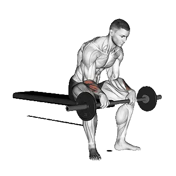

Curl de muñeca inverso
Curl de muñeca inverso permite consultar el peso medio y los estándares de fuerza como referencia dentro de brazos. Los músculos principales son Extensores del antebrazo.

Peso medio: Intermedio
Referencia para una persona de nivel intermedio.
Hombres
121 lb
Mujeres
29 lb
Peso medio de Curl de muñeca inverso [1RM]
| Nivel | ||
|---|---|---|
| Principiante | 7 lb | 6 lb |
| Novato | 45 lb | 15 lb |
| Intermedio | 121 lb | 29 lb |
| Avanzado | 234 lb | 47 lb |
| Élite | 377 lb | 69 lb |
Nota: estos estándares son estimaciones de 1RM basadas en levantadores promedio. Pueden variar según el peso corporal, la edad y otros factores personales. Consulta los datos detallados en la tabla inferior.
Estándares de fuerza de Curl de muñeca inverso (lb)
Hombres por peso corporal (lb) [1RM]
| Peso corporal | Principiante | Novato | Intermedio | Avanzado | Élite |
|---|---|---|---|---|---|
| 110 | 0 | 14 | 63 | 145 | 256 |
| 120 | 0 | 19 | 73 | 160 | 276 |
| 130 | 1 | 24 | 82 | 175 | 295 |
| 140 | 2 | 30 | 92 | 189 | 313 |
| 150 | 4 | 35 | 102 | 203 | 331 |
| 160 | 6 | 41 | 111 | 216 | 348 |
| 170 | 8 | 47 | 120 | 228 | 364 |
| 180 | 11 | 52 | 129 | 241 | 379 |
| 190 | 13 | 58 | 138 | 253 | 394 |
| 200 | 16 | 63 | 147 | 264 | 408 |
| 210 | 19 | 69 | 155 | 276 | 422 |
| 220 | 22 | 75 | 163 | 287 | 436 |
| 230 | 25 | 80 | 171 | 297 | 449 |
| 240 | 28 | 86 | 179 | 308 | 462 |
| 250 | 31 | 91 | 187 | 318 | 474 |
| 260 | 34 | 96 | 195 | 328 | 486 |
| 270 | 38 | 102 | 202 | 337 | 498 |
| 280 | 41 | 107 | 210 | 347 | 510 |
| 290 | 44 | 112 | 217 | 356 | 521 |
| 300 | 47 | 117 | 224 | 365 | 532 |
| 310 | 50 | 122 | 231 | 374 | 543 |
Hombres por edad [1RM]
| Edad | Principiante | Novato | Intermedio | Avanzado | Élite |
|---|---|---|---|---|---|
| 15 | 6 | 38 | 103 | 199 | 321 |
| 20 | 7 | 44 | 118 | 228 | 367 |
| 25 | 7 | 45 | 121 | 234 | 377 |
| 30 | 7 | 45 | 121 | 234 | 377 |
| 35 | 7 | 45 | 121 | 234 | 377 |
| 40 | 7 | 45 | 121 | 234 | 377 |
| 45 | 6 | 43 | 115 | 222 | 357 |
| 50 | 6 | 40 | 108 | 209 | 335 |
| 55 | 6 | 37 | 100 | 193 | 310 |
| 60 | 5 | 34 | 91 | 176 | 283 |
| 65 | 5 | 31 | 82 | 159 | 256 |
| 70 | 4 | 27 | 74 | 143 | 229 |
| 75 | 4 | 25 | 66 | 128 | 205 |
| 80 | 3 | 22 | 59 | 114 | 184 |
| 85 | 3 | 20 | 53 | 102 | 164 |
| 90 | 3 | 18 | 48 | 92 | 148 |
Mujeres por peso corporal (lb) [1RM]
| Peso corporal | Principiante | Novato | Intermedio | Avanzado | Élite |
|---|---|---|---|---|---|
| 90 | 3 | 10 | 21 | 37 | 56 |
| 100 | 4 | 11 | 23 | 39 | 59 |
| 110 | 4 | 12 | 24 | 41 | 61 |
| 120 | 5 | 13 | 26 | 43 | 64 |
| 130 | 5 | 14 | 27 | 45 | 66 |
| 140 | 6 | 15 | 29 | 47 | 68 |
| 150 | 7 | 16 | 30 | 48 | 70 |
| 160 | 7 | 17 | 31 | 50 | 72 |
| 170 | 8 | 18 | 32 | 51 | 73 |
| 180 | 8 | 18 | 33 | 53 | 75 |
| 190 | 9 | 19 | 34 | 54 | 77 |
| 200 | 9 | 20 | 35 | 55 | 78 |
| 210 | 10 | 21 | 36 | 56 | 80 |
| 220 | 10 | 21 | 37 | 58 | 81 |
| 230 | 11 | 22 | 38 | 59 | 82 |
| 240 | 11 | 23 | 39 | 60 | 84 |
| 250 | 12 | 24 | 40 | 61 | 85 |
| 260 | 12 | 24 | 41 | 62 | 86 |
Mujeres por edad [1RM]
| Edad | Principiante | Novato | Intermedio | Avanzado | Élite |
|---|---|---|---|---|---|
| 15 | 5 | 13 | 24 | 40 | 59 |
| 20 | 6 | 14 | 28 | 46 | 67 |
| 25 | 6 | 15 | 29 | 47 | 69 |
| 30 | 6 | 15 | 29 | 47 | 69 |
| 35 | 6 | 15 | 29 | 47 | 69 |
| 40 | 6 | 15 | 29 | 47 | 69 |
| 45 | 6 | 14 | 27 | 45 | 65 |
| 50 | 5 | 13 | 26 | 42 | 61 |
| 55 | 5 | 12 | 24 | 39 | 57 |
| 60 | 4 | 11 | 22 | 35 | 52 |
| 65 | 4 | 10 | 20 | 32 | 47 |
| 70 | 4 | 9 | 18 | 29 | 42 |
| 75 | 3 | 8 | 16 | 26 | 38 |
| 80 | 3 | 7 | 14 | 23 | 34 |
| 85 | 3 | 6 | 13 | 21 | 30 |
| 90 | 2 | 6 | 11 | 19 | 27 |
Nota: una barra estándar de gimnasio suele pesar 44 lb.
Músculos trabajados
| Grupo | Músculos |
|---|---|
| Músculos principales | Extensores del antebrazo |
| Músculos secundarios | Ninguno |
| Estabilizadores | Ninguno |
| Agarre | Extensores del antebrazo |
Registra y analiza en la app Shiba
Consulta pesos, repeticiones y progreso en un solo lugar.
Cómo leer la tabla
| Nivel | Descripción | Distribución |
|---|---|---|
| Principiante | Domina la técnica correcta y entrena de forma constante durante al menos 1 mes. | Parte inferior 5% |
| Novato | Entrena de forma constante durante al menos 6 meses. | Top 80% |
| Intermedio | Entrena de forma constante durante al menos 2 años. | Top 50% |
| Avanzado | Entrena de forma constante durante más de 5 años. | Top 20% |
| Élite | Entrena este ejercicio de forma especializada durante más de 5 años. | Top 5% |
Otros ejercicios
Brazos
Curl de muñeca con mancuernas
Brazos / Mancuernas
Curl de muñeca inverso con mancuernas
Brazos / Mancuernas
Inverso curl con mancuernas
Brazos / Mancuernas
Curl con mancuernas
Brazos / Mancuernas
Curl con barra
Brazos / Barra
Curl martillo
Brazos
Curl con barra EZ
Brazos
Predicador curl
Brazos
Biceps curl en cable
Brazos / Cable
Curl de concentración con mancuernas
Brazos / Mancuernas
Curl inclinado con mancuernas
Brazos / Mancuernas
Biceps curl en máquina
Brazos / Máquina